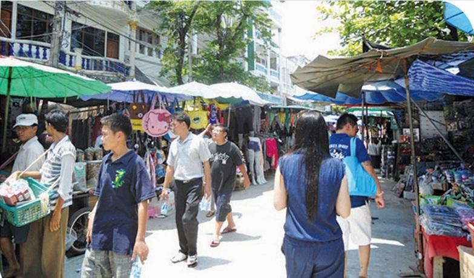
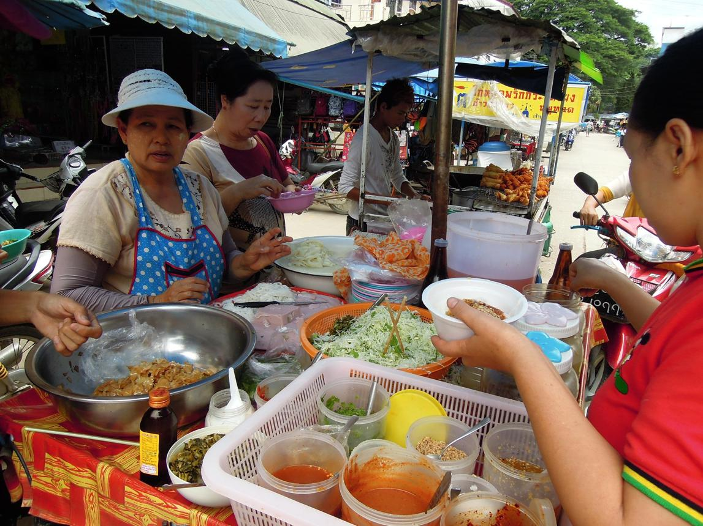
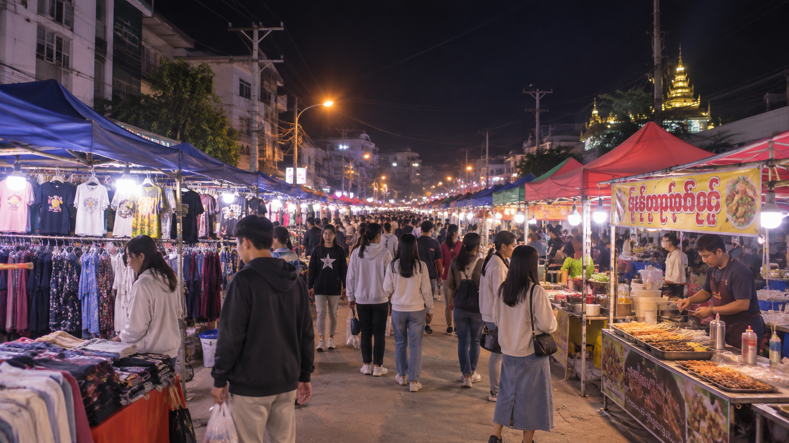
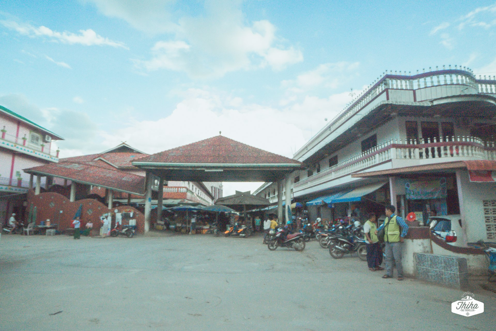
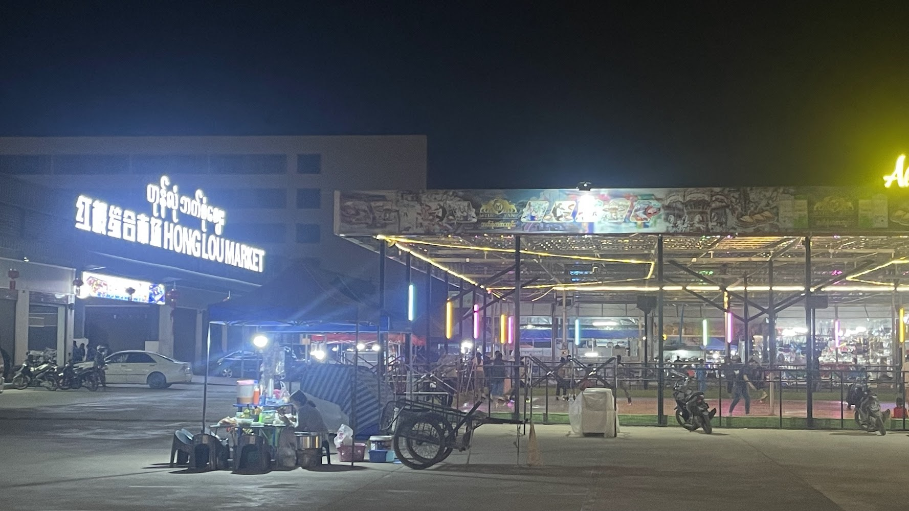
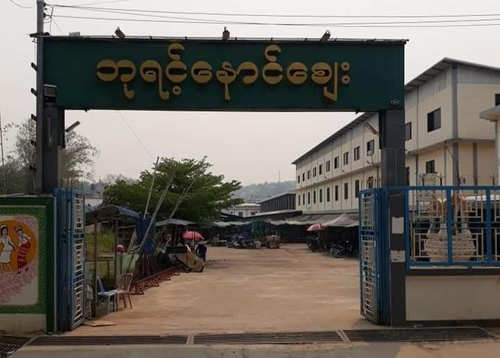
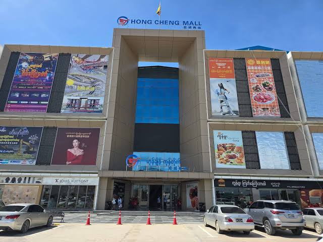

Local Markets In Tachileik
Explore Tachileik's local markets, where you can discover everyday goods, fresh produce, traditional snacks, clothing, and locally sold products. These lively shopping spots offer a glimpse into the town's daily life and local culture, making them interesting places to browse, shop, and experience the atmosphere of Tachileik.

Tar Lot (Talot) Market
Tar Lot Market is one of the well-known shopping areas in Tachileik, located near the Myanmar-Thailand Friendship Bridge. The market features numerous shops and stalls selling clothing, accessories, household goods, snacks, souvenirs, and various everyday products. Its lively atmosphere makes it a popular spot for shopping and exploring local trade.
.png)
San Sai Market
San Sai Pagoda is a Buddhist religious site in Tachileik, known for its peaceful atmosphere and traditional architecture. Surrounded by the local community, it offers visitors a quiet place to pay respects, appreciate the surrounding scenery, and experience the area's religious and cultural traditions.

Wan Kaung Market
Wan Kaung Market is one of the local shopping areas in Tachileik, where residents can find a variety of everyday goods and fresh products. Its shops and stalls offer groceries, household items, snacks, and other daily essentials, making it a convenient place to shop while experiencing the town's everyday market life.

Tachileik Night Market
Tachileik Night Market is a lively shopping spot where visitors can browse various stalls selling street food, snacks, clothing, accessories, and everyday goods. As the evening sets in, the market becomes a popular place to enjoy local food, explore small shops, and experience Tachileik's nighttime atmosphere.
(Representative Tachileik Night Market image — not an actual photo of Tachileik Night Market.)

Akha Market
Akha Market is a local market in Tachileik, situated along the main road near the Myanmar-Thailand border. It is particularly known for offering ethnic products associated with the Akha community, giving visitors an opportunity to explore traditional goods and experience a part of the area's local culture.
(This may be an outdated photo, as Akha Market has since been renovated and modernized. Its current appearance may differ.)

Hong Lou Market
Hong Lou Market is a local shopping area in Tachileik where visitors can explore various small vendors and everyday goods. Known for its lively atmosphere, particularly in the evening, it serves as a convenient spot for local shopping, casual browsing, and meeting up with others.

Bayint Naung Market
Bayint Naung Market is a local market in the Wan Kaung area of Tachileik, serving nearby residents with everyday shopping options. It features local shops and vendors selling various goods, making it a convenient place for daily shopping and experiencing the town's local market atmosphere.

Hong Cheng Mall
Hong Cheng Mall is a modern shopping complex in Tachileik, not a traditional local market, featuring multiple floors of retail shops and businesses. Visitors can browse different stores, explore shopping options, and enjoy its indoor commercial atmosphere. It also includes entertainment and food businesses, making it more than just a shopping destination.